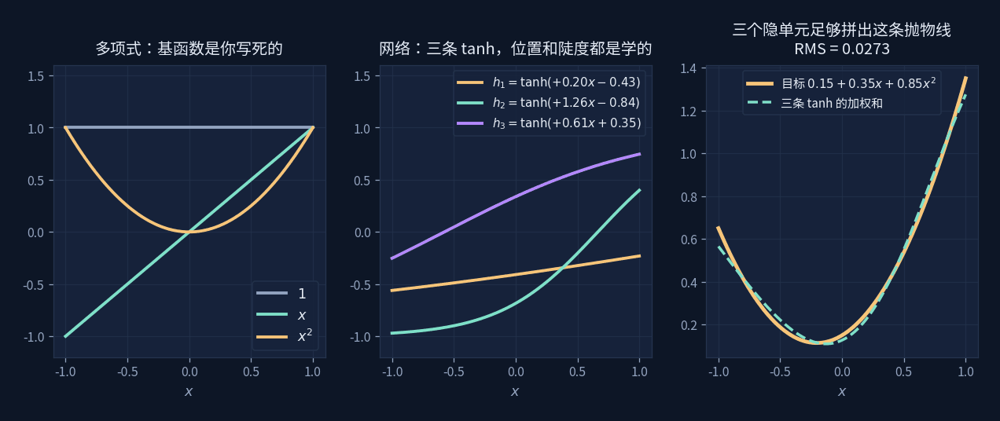
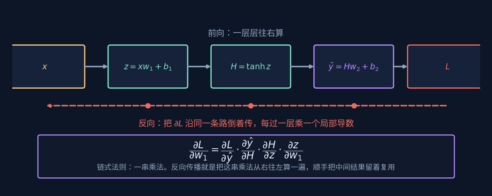

神经网络
Neural Networks
一层矩阵，一次弯折，反复堆叠。
前面五个板块的东西，在这里同时上场。
矩阵是一次线性变换（矩阵与变换）
损失最小化靠令导数为零或沿负梯度走（变化与梯度）
拟合是在够得着的范围里找最近的点（拟合与最小二乘）
神经网络没有引入新数学，它只是把这三样反复叠加。
一层在做什么
去掉所有比喻，一层神经网络就两步：
先做一次仿射变换，再逐元素弯一下
第一步是矩阵板块讲过的东西：$W$ 把输入送到别处，$b$ 平移。 第二步 $\sigma$ 是激活函数，比如 $\tanh$——它是整件事里唯一的非线性来源。
为什么非得有那一下弯折
因为线性变换叠加起来还是线性变换。$W_2(W_1x)=(W_2W_1)x$，
一百层叠在一起，效果等同于一个矩阵。没有 $\sigma$，深度毫无意义。
弯一下之后，叠加才开始产生新东西。
它和多项式拟合差在哪

拟合板块里，我们用 $1,\,x,\,x^2,\,x^3$ 去拟合舵机的标定曲线。 这四个函数是你选的——设计矩阵 $A$ 的每一列都由你写死， 最小二乘只负责求它们的权重。
网络不一样。中间那张图的三条 $\tanh$，它们的陡度和位置也是学出来的。 训练时不只在调最后的加权系数，连"用哪几个基函数"都在调。
最小二乘：基函数你定，权重我解 → 线性方程组，一步出结果
神经网络：基函数和权重我都调 → 非线性优化，只能一步步试
右图是三条 $\tanh$ 加权拼出的抛物线，RMS 已经到 $0.027$。 三个隐单元就够了——它们不是 $1,x,x^2$，但拼出来的效果一样。
训练：把误差的责任分摊回去

前向很直白：$x$ 进去，一层层算到 $\hat y$，和目标比一下得到损失 $L$。
难的是反过来问：要减小 $L$，第一层那个 $w_1$ 该往哪边动？ 它离出口隔了好几层，影响是间接的。答案就是微积分板块里的链式法则：
一串乘法。反向传播就是把这串乘法从右往左算一遍， 顺手把中间结果存下来给前面几层复用——不然每个参数都从头乘一遍，代价会大得离谱。
写成代码只有三行，和上面那串偏导一一对应：
dY = 2*(yhat - y)/61 # ∂L/∂ŷ
dH = dY @ w2.T * (1 - tanh(z)**2) # 乘 ∂ŷ/∂H，再乘 ∂H/∂z
dw = x.T @ dH # 乘 ∂z/∂w₁第二行末尾那个 $1-\tanh^2 z$ 就是 $\tanh$ 的导数。 它的最大值是 1，而且在两端迅速趋近于零—— 几十层叠起来，这些小于 1 的数连乘，梯度传到最前面就几乎没了。 这就是深层网络里的梯度消失，也是后来 ReLU 取代 $\tanh$ 的原因之一。
四个概念
激活函数 Activation
- 是什么
- 逐元素作用的非线性函数，$\tanh$、ReLU、sigmoid。
- 为什么必须有
- 它是网络里唯一的非线性来源。去掉它， 再多层也塌回成一个矩阵，表达能力和一次线性回归相同。
- 结构位置
- 正是它让"基函数可学"成为可能——弯折的位置和陡度由 $W,b$ 决定， 而 $W,b$ 是训练出来的。
- 选错的代价
- $\tanh$ 两端导数趋零，深层会梯度消失； ReLU 输入为负时导数恰好是 0，神经元可能"死掉"再也不更新。
反向传播 Backpropagation
- 是什么
- 把链式法则从输出往输入算一遍，同时缓存中间结果。
- 不是什么
- 它不是一种新的求导方法，就是链式法则。 真正的贡献是那个"顺手存下来复用"的组织方式， 让梯度的计算量和前向差不多，而不是随层数爆炸。
- 结构位置
- 现代框架里叫自动微分。你写前向，梯度是它自己推出来的。
- 断在哪里
- 链上任何一环的局部导数接近零，后面的层就收不到信号了。
梯度下降 Gradient Descent
- 是什么
- $\theta\leftarrow\theta-\eta\,\nabla L$，朝损失下降最快的反方向迈一步。
- 学习率 $\eta$
- 步子大小。太大跨过谷底来回震荡，太小要走很久。 演示里拖那条滑块能直接看到损失曲线的反应。
- 结构位置
- 它是"令导数为零"解不出来时的退路。 最小二乘能一步解出，是因为损失对参数是二次的、导数是线性的； 网络的损失非线性，只好一步步试探着下山。
- 停在哪里
- 梯度为零的地方——可能是最小值，也可能是鞍点或局部极小。 没有任何保证它是全局最优。
过拟合 Overfitting
- 是什么
- 模型把训练数据里的噪声也学了进去。
- 怎么看出来
- 训练损失一直降，但换一批数据表现变差。 演示里把噪声滑块拉大、让它训久一点，曲线会开始追着噪点扭。
- 结构位置
- 参数越多越容易过拟合。舵机标定那页里， 3 阶到 4 阶几乎没有改进，就是在告诉你"到此为止"—— 再加阶数只是在拟合噪声。
- 反过来
- 参数太少则欠拟合，连真实规律都表达不出来。 这两者之间的取舍没有公式，只有判断。
回到舵机：三万次 vs 一步

同一组 61 点真实标定数据。最小二乘解一个线性方程组， 一步得到 0.621°；小网络梯度下降跑了三万轮，追到 0.615°。 几乎打平。
该怎么读这个结果
不是说网络没用，而是：当你知道曲线该长什么样的时候，
把形状写进模型远比让网络自己猜划算。
电位器的分压特性本来就是低阶光滑的，三四个系数足够描述，
最小二乘一步解出还附赠唯一性保证。
网络的价值在你不知道形状的场合——图像、语音、语言，
没人写得出那个"基函数"该是什么样。
还有一点值得留意：两者的误差都卡在 $0.6°$ 上下动不了。 因为它们面对的是同一个天花板——那 $2.07°$ 的机械回差在数据里留下的印记。 换模型解决不了机械问题。
一句话
神经网络不是一门新数学。
它是矩阵、导数、拟合这三件旧事，被反复叠加了很多层。
它厉害的地方不在数学深，而在规模大到某个程度之后， "自己找基函数"这件事开始比"人来指定基函数"更有效。